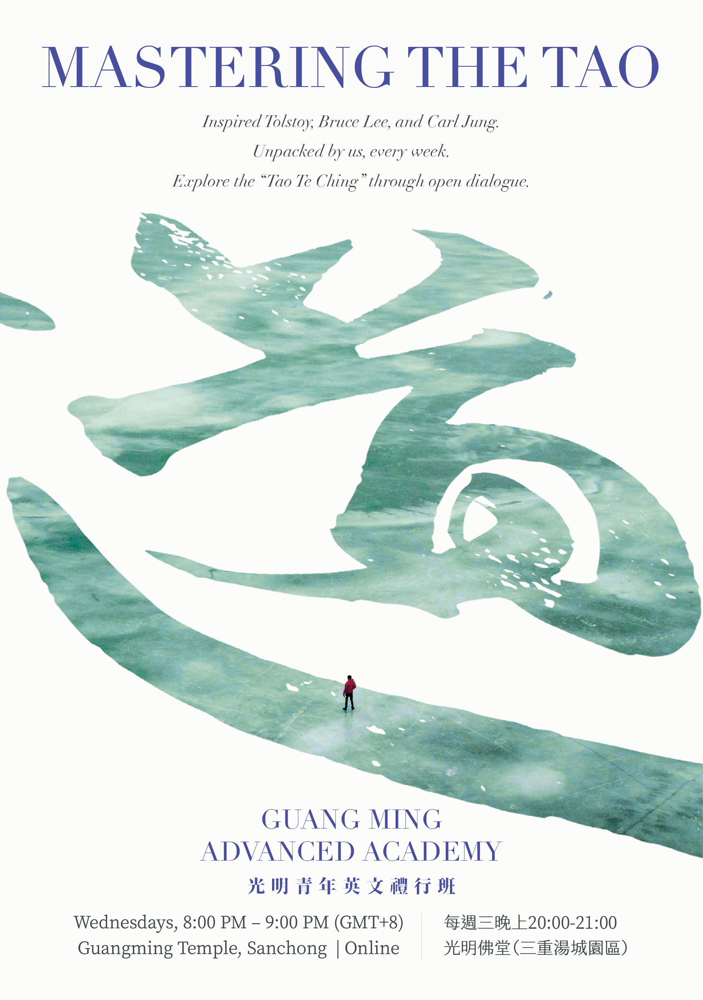

Laozi · Classical Taoism
道德經
Tao Te Ching
81 chapters on the Way, Virtue, and the nature of all things.
English translation with Chinese original text and commentary.
Introduction · 序言
道
No chapters match your search.